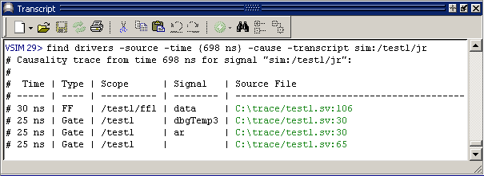

Prerequisite:
Before using this command, you need to do either of the following:
Run the vopt command with the -debugdb argument.
If vopt is not used, simulate the design with the -debugdb and -voptargs=”+acc” arguments to the vsim command.
Traces backward in time to find the active driver(s), processes, or first elements of the specified signal or signal event.
find drivers [-schematic] [-last] [-source] [-transcript [-compact <string> | -tcl]
[-noclip | -width <n>]] [-time <time> [unit]] [-wave] <signal>
find drivers -cause [-schematic] [-last] [-source] [-transcript [-compact <string> | -tcl]
[-noclip | -width <n>] [-time <time> [unit]] [-wave] <signal>
find drivers -rootcause [-schematic] [-last] [-source] [-transcript [-compact <string> | -tcl]
[-noclip | -width <n>] [-time <time> [unit]] [-wave] <signal>
find drivers -chasex [-schematic] [-last] [-source] [-transcript [-compact <string> | -tcl]
[-noclip | -width <n>] [-time <time> [unit]] [-wave] <signal>
find drivers -possible [-schematic] [-last] [-transcript [-compact <string> | -tcl]
[-noclip | -width <n>] [-wave] <signal>
The find drivers command can trace through multiple clock cycles and multiple clock domains. Traces are executed either during simulation or post-simulation.
You can do the following types of causality traces:
Show Cause — Trace back to the first sequential element causing the event. Duplicates the GUI menu paths: Show Cause > Show Cause or Show Cause > Show Cause from Time. (Refer to Initiating Causality Traceback from the GUI in the User’s Manual.)
Show Driver — Trace the specified signal back to the immediate driving process(es). The process(es) may be combinatorial or sequential assignments. Duplicates the GUI menu paths: Show Cause > Show Driver or Show Cause > Show Driver from Time.
Show Root Cause — Trace the event back as far as possible. This can cross multiple clock cycles and multiple clock domains. Duplicates the GUI menu paths: Show Cause > Show Root Cause or Show Cause > Show Root Cause from Time.
Show All Possible Drivers — Display all possible driving assignments for a signal (does not use the simulation results to determine). Duplicates the GUI menu path: Show Cause > Show All Possible Drivers.
Traces may find more than one active driver for the specified signal and time. To continue backtracing, you must start a new search on one of the drivers identified in the Multiple Drivers dialog or the transcript. You must also specify the time that the signal was found. Refer to the Examples section for more information.
You can use the Escape key to interrupt the various find drivers operations.
You can enter find drivers -help or find drivers -? to access a help menu.
Full causality traceback functionality requires optimization of your design with vopt or vsim -voptargs. Refer to Using Causality Traceback in the User’s Manual for more information.
(optional) Traces the specified <signal> back to the first sequential element causing the event.
(optional) Traces to the root cause of an ‘X’ on the specified signal over multiple cycles and clock domains.
(optional) Specifies a compact format for data output, using a specified text string to separate the fields.
<string> — Any combination of characters. Allows special characters, except a backslash ( \ ).
(optional) Places all signals contained in the path found by the trace in a dedicated Schematic window.
(optional) Returns the results from the last completed trace to the transcript. Useful for trying the various format options. Allows you to quickly see how each format option (‑compact, -tcl, -width, and -noclip) affects the output.
(optional) Allows columns to be arbitrarily long when returned to the transcript.
(optional) Displays all of the possible driving assignments for a signal (does not use simulation results). The data returned is hyperlinked to the driving signal in the source file.
(optional) Trace the event back as far as possible. This may cross multiple clock cycles and multiple clock domains.
(optional) Opens the source file containing the line of code found by the trace, scrolls to show that line, and highlights the driving signal. If the trace type is -possible, this option is not allowed.
(optional) Displays trace results in a TCL list.
(optional) Traces <signal> from a specified time. If not specified, the trace begins from the current active time indicated by either the end of the simulation, or the Wave window’s active cursor. The -time option is not allowed when using the -possible argument.
<time> — Specified as an integer or decimal number. Current simulation units are the default unless specifying <unit>.
<unit> — (optional) A suffix specifying a unit of time. The default is to specify the current simulation resolution by omitting <unit>. You must enclose <time> and <unit> within braces ({}). Valid VHDL time units are: fs, ps, ns, us, ms, sec, min, and hr.
(optional) Reports trace results to the Transcript window in tabular format (unless the -compact argument is used). Default behavior if not using -schematic, -source, or -wave. Returns the following information:
“Causality trace from the time <time> for the signal <signal>”
Time — Simulation time when the driving signal caused a change in the traced signal.
Type — Register containing the traced signal.
Scope — Name of the signal that caused the change in the signal being traced.
Source File — Location of the signal in the source file. Includes the full path, name of the source file, and line number. The text is hyperlinked to the location of the driving signal. Double-clicking the entry opens the source and highlights the source code.
(optional) Adds all signals in the path found by the trace to a dedicated Wave window, and displays cursors to show the beginning and ending times of the trace. Clears the dedicated Wave window of signals before displaying the results of a new trace.
(optional) Specifies the maximum size of each column when data is returned to the transcript in tabular form.
<n> — Any positive integer.
(required) The path name of a signal in the Wave window. Must be the final argument to the find drivers command.
Show the first sequential process for the signal test1/jr
find drivers -source -time {698 ns} -cause -transcript sim:/test1/jr

Locate the driving signal for the Flip Flop /test1/ff1 in the source file by double clicking on the linked text:
C:\trace/test1.sv:106.The driving signal is highlighted in the source file.
Trace a signal that finds Multiple Active Drivers.
find drivers -source -time {867 ns} -cause -transcript sim:/test1/mnf
returns:
# Multiple active drivers exist at time 822 ns for signal sim:/test1/mnf:
# PROCESS: #ASSIGN#33 SIGNAL: /test1/ar FILE: C:\ctraceback/test1.sv:33
# PROCESS: #ASSIGN#33 SIGNAL: /test1/br FILE: C:\ctraceback/test1.sv:33To continue the trace you must select one of the multiple drivers and execute the find drivers command again on that signal. For example:
find drivers -source -time {822 ns} -cause -transcript /test1/br
returns:
# Causality trace from time 822 ns for signal "sim:/test1/br":
#
# Time | Type | Scope | Signal | Source File
# ------ | ---- | ------ | ------ | -----------------------------
# 822 ns | Gate | /test1 | | C:\ctraceback/test1.sv:66